Les' Aullian Achmad Argito
Fresh graduate in Agricultural Engineering (S.T.P., Universitas Gadjah Mada, GPA 3.44/4.00, graduated 16 July 2026). I have not held an HR title yet, so this site takes your posting's three responsibilities and three requirements one at a time and shows the work I have already done for each. Two work samples were built for this application from your public intern form and the @ecikarir account.
Your posting, and where my evidence is
| Your posting says | What I can show | Where |
|---|---|---|
| Support for recruitment process | 30+ teams screened with the same steps for everyone; a 60-applicant competition pipeline run as its single contact point; about 95 students per cohort scored on one rubric. | Recruitment |
| Support for employer branding activities | 11 CapCut edits for my own programmes; an Instagram launch grid designed in Canva; a two-day school outreach event; an English pitch that won Best Presentation at an international final. | Employer Branding |
| Handle administrative task | 160 residents' KTP and KK checked in one session; two days at a village service counter; a formula-driven tracker that won 1st place nationally. | Administration |
| Min. bachelor's degree or final-year student, any major | S.T.P. (Bachelor of Agricultural Technology), Universitas Gadjah Mada, graduated 16 July 2026. Programme accredited Unggul (BAN-PT) and by ASIIN. | HR Learning |
| Good communication skill | 1st Winner and Best Presentation, BA-SE 2026 (Thailand, in English); land, labour and schedules agreed with a village government and two farmer groups; a COO's recommendation letter from a remote team. | Recruitment |
| Basic editing skill for photos / videos | CapCut: cutting, caption timing, voice clips, 9:16 reels. Canva: posts, banners, a split Instagram grid. | Employer Branding |
Built for this application
An intern-intake tracker on your own form
An Excel file whose columns are the fields of your intern form: the 46 named tracks, Status Magang, the class-schedule question and your 12 source options. Illustrative data only.
A four-week plan for @ecikarir
Four posts built on the highlights you already run (Campus Hiring, Tips & Trick, Penipuan), a reel storyboard, and a way to count applications per post instead of likes.
What I do not have yet
- An HR title or an HR internship.
- Any ATS or HRIS used as a recruiter.
- Authority to interpret psychological tests (I would keep to scheduling, administering and key-based scoring).
- Adobe Photoshop or Premiere Pro; I edit in CapCut and Canva.
- Formal training in labour law (PKWT).
Recruitment: the same steps for every candidate
I have chosen people for 30+ teams under fixed deadlines and assessed about 95 students per cohort. Both taught me the rule I would bring to your hiring: score everyone on the same evidence, not on the impression they leave.
How I screened members for 30+ teams, 2022 to 2026
- Define the seatThe capability the deadline needs, written down before approaching anyone.
- SourceCampus networks, asking for people who had delivered similar work.
- ConversationAbout work they had actually delivered: what they did, what went wrong.
- Trial taskA small real task before committing; people who could not deliver it were not carried forward.
The teams were unpaid and worked three to nine months to fixed registration deadlines, so the screen had to predict who would still deliver in month three, not who interviewed well.
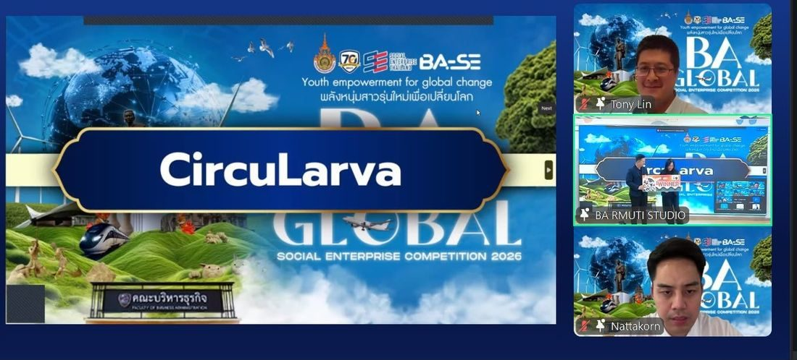
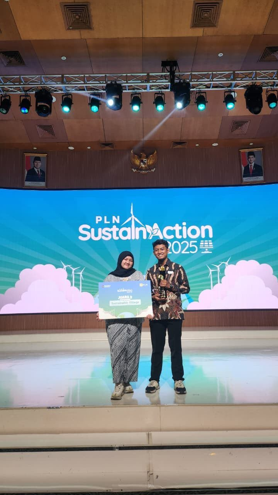
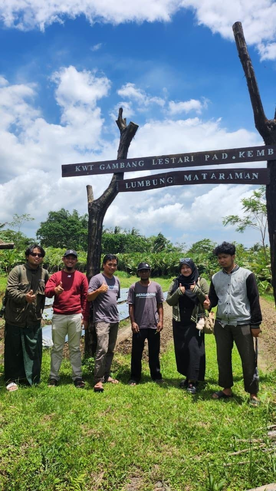
A 60-applicant pipeline, one contact point
I was the single contact point for about 60 participants over roughly three months, working with a 10-person committee from online registration to an offline final.
- Registration data, document submission and technical information for every entrant.
- Participant questions answered through the online rounds.
- Incomplete files followed up directly; the event closed with a written evaluation.
One rubric for about 95 people
I marked method and reasoning rather than presentation, so a confident performer could not outscore someone who had understood the work, and I delivered complete grade records on deadline.
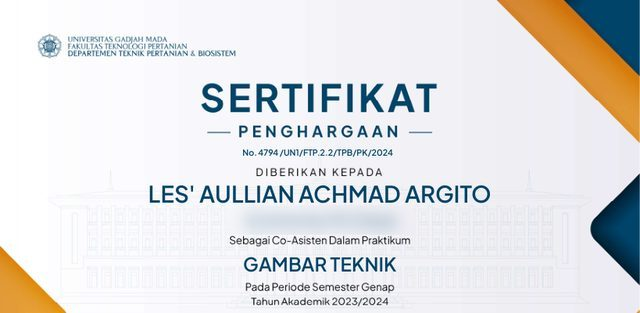
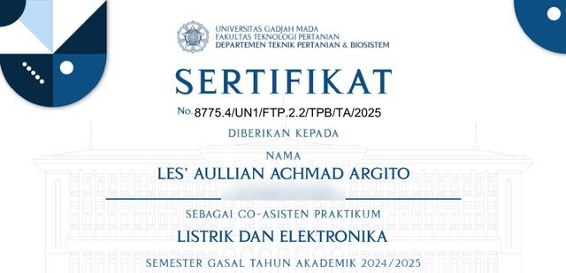
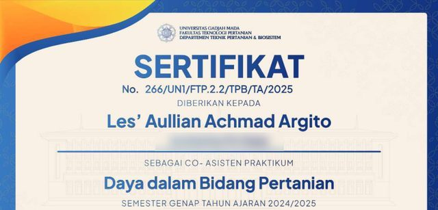
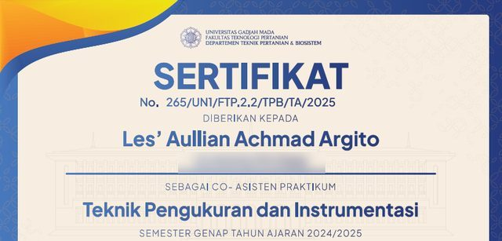
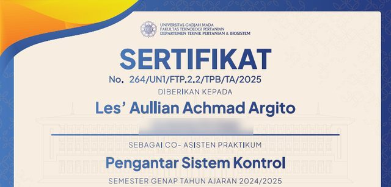
Your intake: 46 tracks through one link
Your intern form routes 46 named tracks through one Google Form, next to separate forms for Electronic City store and DC roles, Grooceries City stores and Service City aftersales. That makes two things matter more than usual: getting each applicant to the right user department quickly, and catching the same person applying to several tracks. This is how I would group the tracks, and where my own background lets me read an applicant's CV or portfolio for substance rather than keywords. The grouping is my assumption from the track names; the real user departments come from your team.
| Cluster | Tracks on your form | What I can read for substance |
|---|---|---|
| People (HR) | Employer Branding, Recruitment, HRD, Training Development | 10 MySkill HR courses; two sides of the training room as teaching assistant and trainee |
| Marketing and content | Social Media Specialist, Graphic Designer, Video Editor, Motion Graphic, Public Relations, Event, Host Live & Marketplace Support, Customer Relationship Management | Whether a reel or design portfolio was really cut and captioned by the applicant (CapCut, Canva) |
| E-commerce | Admin E-Commerce, E-Commerce | - |
| Merchandising and buying | Buyer, Product/ Merchandising, Merchandising, Visual Merchandiser, B2B (Central Purchasing), Procurement, Supply & Demand Planning | Batch and expiry logic (FEFO) from GRIT PANGAN AMAN |
| Finance, tax and legal | Accounting, Finance, Tax, Legal | - |
| IT and data | IT Support, IT Developer, Data Analyst | Python and Excel, with my public code on GitHub |
| Operations and service | Logistics, General Affair, Administration, Call Center, Sales | Front-desk work at a village service counter |
| Property and store development | Interior Designer, Architect, Civil Engineer, ME Engineer, Quantity Surveyor, Site Development, Maintenance, HVAC Technician, Casual Leasing, Tenant Relation | Engineering degree: technical drawing (taught as assistant), machine design, electrical and control courses |
| Culinary (Cook & Bake City) | Cook and Bake City, Chef Assistant, Cook Helper | 7 food-safety certificates: GMP, HACCP, ISO 22000, FSSC 22000, QA, QC, HACCP documentation |
The final judgement on a technical candidate stays with the user department. My part is to send them a shortlist that is complete, comparable and on time.
Campus and school hiring
Your form counts Kampus and Sekolah among its sources, and @ecikarir keeps a Campus Hiring highlight. I am an alumnus of both ends of that pipeline: a vocational school (SMK Negeri 63 Jakarta, Jagakarsa) and Universitas Gadjah Mada. I can speak to SMK leavers and final-year students in their own terms, and I have run a school outreach session before (see Employer Branding).
Remote teamwork is on record too. The COO of Titik Terang, a fully remote volunteer community, wrote that I was "a dependable, proactive, and positive presence within our team".
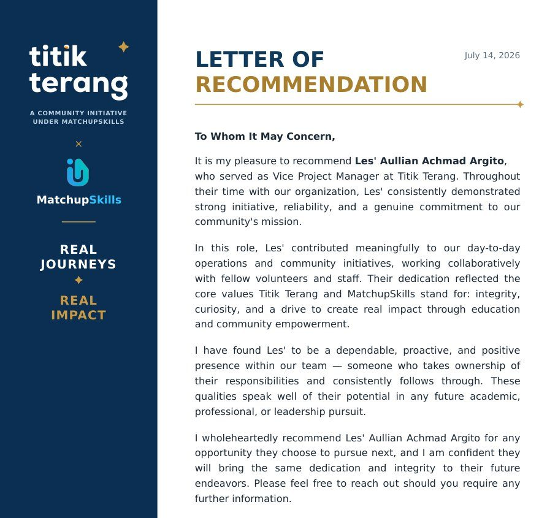
Candidate messages I would send
Drafts in Indonesian, as candidates would receive them. The first two repeat that recruitment is free, which is the message of your Penipuan highlight. Draft
1. Lamaran diterima
Halo [Nama], terima kasih sudah melamar magang posisi [Posisi] di PT Electronic City Indonesia Tbk. Lamaranmu sudah kami terima dan sedang ditinjau. Kandidat yang lolos akan kami hubungi paling lambat [tanggal]. Proses rekrutmen Electronic City tidak dipungut biaya apa pun.2. Undangan interview
Halo [Nama], kamu kami undang interview magang posisi [Posisi] pada [hari, tanggal] pukul [jam] WIB di [lokasi atau tautan]. Mohon konfirmasi kehadiran sebelum [tanggal]. Jika status magangmu Kewajiban Kampus atau PKL, siapkan surat pengantar dari kampus atau sekolah. Seluruh proses ini tanpa biaya.3. Kabar keputusan
Halo [Nama], terima kasih sudah mengikuti seleksi magang posisi [Posisi]. Untuk periode ini kami belum dapat melanjutkan lamaranmu. Datamu kami simpan sampai [tanggal] untuk posisi lain yang sesuai, kecuali kamu meminta untuk dihapus.Employer branding: photo, video and events
Employer branding is explaining a workplace to people who have never been inside it. I have done that for my own programmes, in video, in design and in front of an audience.
Video: 11 CapCut projects, August 2025 to July 2026
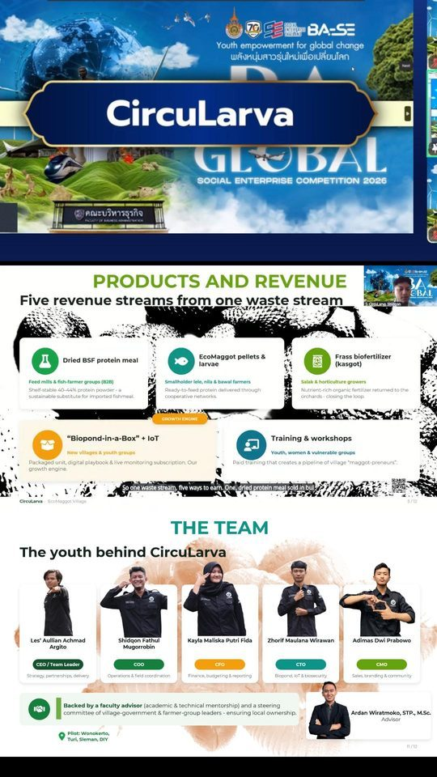
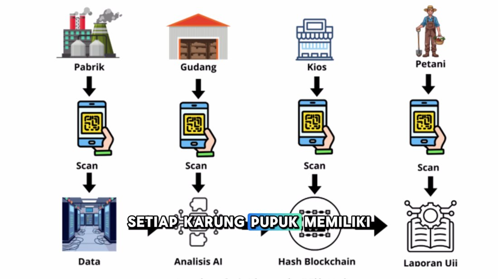
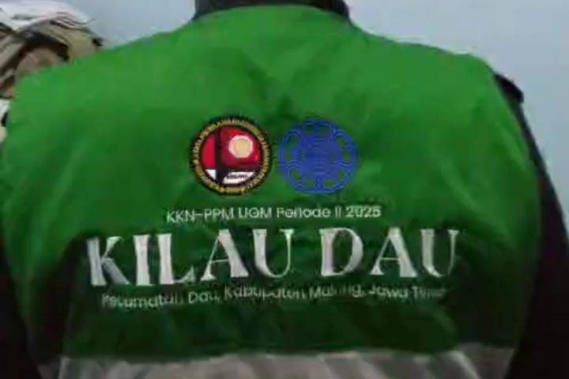
| Competition pitch | 170 s, 41 shots on 5 video tracks, 68 caption segments, 20 recorded voice clips |
| Oil palm pitch | 161 s with voice-over, 5 video tracks |
| 9:16 reel | 59 s from a livestream, re-framed for vertical viewing |
| KKN recap | 59 s, 71 photos and a clip, cut to music |
| Other edits | A 156 s video essay, two 10-minute recording trims and four shorter cuts |
I cut and assembled every edit myself in CapCut and timed the captions where there are any; the figures come from the project files on my laptop. The full videos are available on request. They are not published here because they show teammates and third-party music.
Design: a programme launch for Instagram
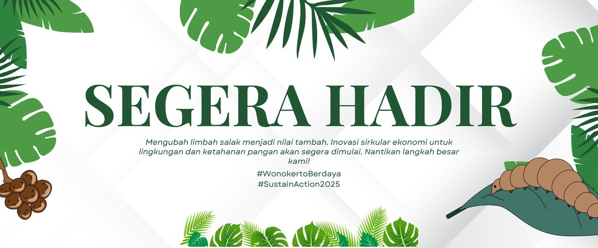
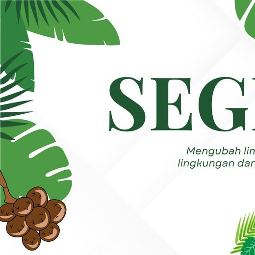
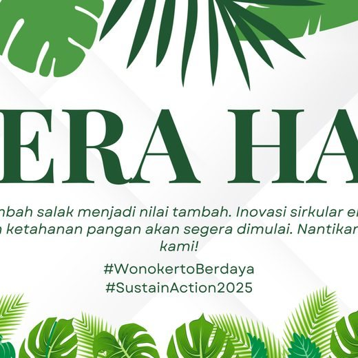
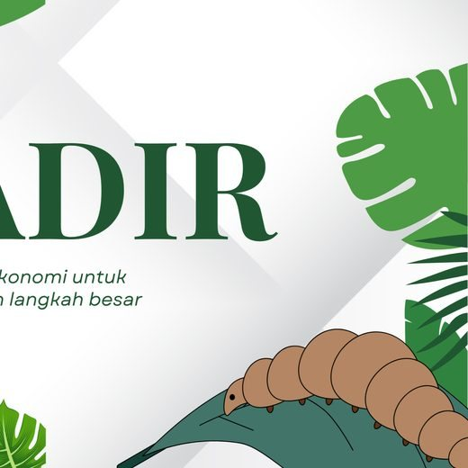
Events that ran to the rundown
- School outreach, KKN-PPM UGM, 16 to 17 July 2025, 420 minutes: venue, props, projector and sound, rehearsal, evaluation, photo and video documentation.
- Competition final, BEM FTP UGM: about 60 participants, a 10-person committee.
- Seminars, Gadjah Mada Entrepreneurship Community (2024 to 2025): committee work, participant administration, documentation.
- International final, BA-SE 2026: English pitch as team leader, 1st Winner and Best Presentation.
A four-week plan for @ecikarir Draft for Electronic City
@ecikarir already has nearly 33,000 followers (September 2026), a bio that says you never charge fees, and highlights for Campus Hiring, Tips & Trick, Apply Now and Penipuan. The plan builds on those instead of starting over. Post texts are in Indonesian, as they would be published.
| Week | Post | Why it helps hiring | What I would count |
|---|---|---|---|
| 1 | Reel, 30 to 40 s: "Sehari jadi intern di Electronic City SCBD", filmed with a current intern from morning check-in to a team meeting. | Candidates see the real job before applying. | Applications through this reel's own short link, not views. |
| 2 | Carousel, 5 slides: "Cara cek lowongan asli Electronic City": the official channels in your Linktree, no fees at any stage, no request to transfer money. | Extends the Penipuan highlight; protects applicants and the company name. | "Is this real?" questions in DMs, before and after. |
| 3 | Carousel, 6 slides: "46 posisi magang, pilih yang mana?": the tracks in 9 groups, which ones need a portfolio, who each one suits. | Fewer applications to the wrong track and fewer duplicates. | Duplicate rate in the intake tracker. |
| 4 | Reel and Story: a Campus Hiring recap plus "Tips & Trick: CV magang satu halaman". | Feeds two highlights you already run. | Kampus and Job Fair applicants who pass CV screening. |
Storyboard for week 1: six shots, about 36 seconds
- 0 to 3 sHookWalking into the SCBD office with a lanyard.
Magang di Electronic City itu ngapain aja, sih?
- 3 to 9 sMorningOpening the day's task list at the desk.
08.30 · cek daftar tugas hari ini
- 9 to 16 sThe workA team meeting, a store visit or a content shoot.
10.00 · ikut rapat tim
- 16 to 24 sWhat they madeShowing a poster, a report or a spreadsheet they built.
Yang aku pelajari minggu ini: ...
- 24 to 31 sIn their wordsOne sentence to camera, subtitled.
Subtitle of the intern's own sentence
- 31 to 36 sCall to actionEnd card with the link and the no-fee line.
Daftar: bit.ly/ECIINTERN · Rekrutmen tanpa biaya
Caption draft
Penasaran magang di Electronic City itu seperti apa? Ikut sehari bareng [nama], intern [divisi] di kantor SCBD: dari cek tugas pagi sampai rapat tim. Lowongan magang sedang dibuka untuk banyak posisi, dari Recruitment sampai Video Editor. Daftar lewat link di bio. Ingat, rekrutmen Electronic City tidak dipungut biaya apa pun.
How each post is judged
- One short link per post counts clicks; the form's own "Dari mana anda tahu" answer counts applications; the intake tracker shows who passes CV screening and who joins.
- A post is judged on qualified applications and joins, not on likes. Reach can grow while qualified applications do not; I check what a number is counting before I report it.
- A post with fewer than five applications is too small to compare with another; the tracker marks it "too few to judge".
Prepared for this application from @ecikarir's public profile, the Linktree and the intern form. It is not an Electronic City post and uses no Electronic City logo or photograph.
Administration: records that stay correct
Recruitment data fails quietly: a missing campus letter, the same person applying to two tracks, an applicant nobody has answered for two weeks. I have handled each kind of problem outside HR, and the tracker at the bottom of this page applies the same care to your intern form.
160 residents' documents in one 4-hour session
Registration for government rice aid at the Tegalweru village hall on 29 July 2025. The starting data was out of date, so every entry was checked in person:
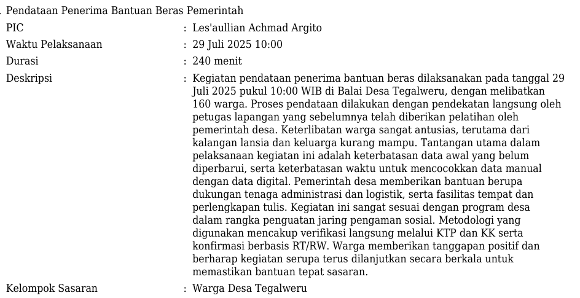
Status computed, not typed
An inventory tracker for food micro-businesses, shown with its demonstration data. Days remaining and status come from dates with IF and TODAY, records are looked up with INDEX-MATCH, and a COUNTIF dashboard counts them.
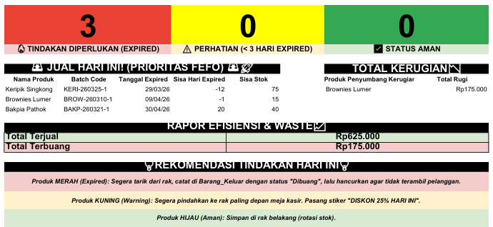
Paperwork that went out on time
- BEM FTP UGM, Head of Division: 7 staff, one programme each; data recaps, documentation and reports checked for completeness before submission.
- EcoMaggot Village (PLN SustainAction 2025): work plans, implementation evidence and reports to the funder on its reporting calendar.
- PT Petrokimia Gresik, industry internship: a technical report reviewed with the division supervisor.
Work sample: an intake tracker built on your intern form Illustrative data
Every column that a candidate fills comes from your own form: the 46 named tracks, Status Magang (Mandiri, Kewajiban Kampus, PKL), the class-schedule question, the start date and your 12 source options. The rest is formulas, so the weekly list of what needs doing writes itself. 64 invented applicants, identified by ID only.
Download the Excel file (illustrative)
| Column | How it works |
|---|---|
| Cluster | INDEX-MATCH against a Routing sheet that maps the 46 tracks to 9 clusters, so each applicant lands with the right reviewer. |
| Missing docs | Counts a missing CV, a missing portfolio where the track needs one, and a missing campus or school letter for Kewajiban Kampus and PKL applicants. |
| CHECK SCHEDULE | Raised when the form's class answer is three or more meetings a week, so working days are agreed before the interview, not after the offer. |
| FOLLOW UP | Raised when an active applicant has waited more than 5 days at one stage (the limit is a setting). |
| CHECK DUPLICATE | Raised when one email appears twice, the most likely duplicate on a single form with 46 tracks. |
| Source effectiveness | Applicants, interviews and joins per source, using your form's own list; any source with fewer than 5 applicants is marked "too few to judge". |
Dashboard
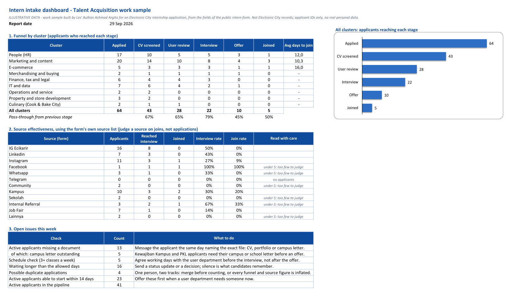
Applicants sheet
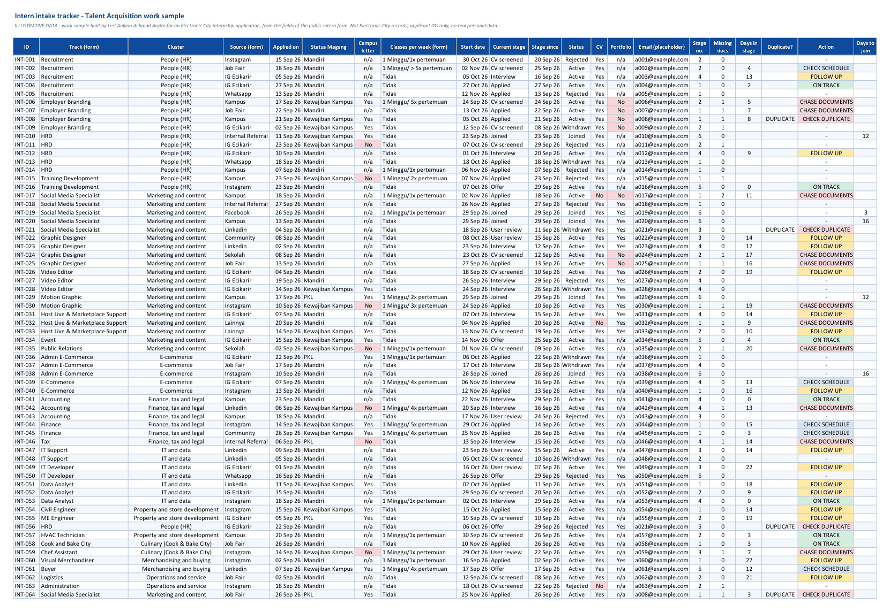
Routing sheet
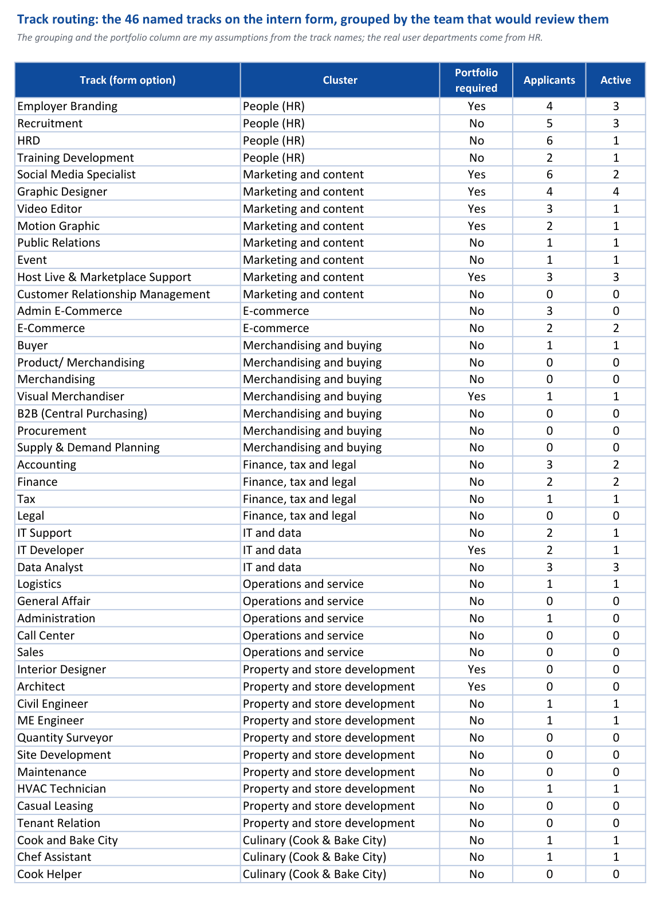
Candidate data rules I would follow: collect only what the hiring decision needs, keep one dated master record with access limited to the hiring team, and set a deletion date for unsuccessful applicants, in line with UU No. 27/2022 on personal data protection. I have not had formal training in that law.
HR learning: ten MySkill courses, and where I would use them
My degree is engineering, so I studied the HR side on purpose. These are the ten self-paced MySkill e-learning courses I have taken, grouped by the part of this internship they support.
Foundations
Hiring
Organisation, performance and reward
People data
Why I check what a number counts
From a follow-up validity check of my thesis data (Smart Agriculture research group, UGM, July to September 2026): the reading followed the calibration setting, not the leaf, so I reported that instead of a stronger claim. The HR version is an interview score that moves with the interviewer, or a post whose reach grows while qualified applications do not.
Other training and credentials
- B+HR Youth Action Lab 2026, UNDP Indonesia x Narasi Academy: business and human rights, the framework behind non-discriminatory hiring.
- Leadership Class Batch 13, Institut Harkat Negeri (May to June 2026).
- Founding Fellow, Impact Leaders Fellowship 2026, Pijar Foundation; GerakDampak Academy 2026, Indika Foundation; Awardee, LETS Academy 2026.
- 7 Makin Ahli quality and food-safety certificates, August 2026: GMP, HACCP, ISO 22000:2018, FSSC 22000 v7.0, QA, QC and HACCP documentation, the grounding for the Cook & Bake City tracks.
- Education: S.T.P., Agricultural Engineering, UGM, GPA 3.44/4.00 (2022 to 2026); SMK Negeri 63 Jakarta, final average 85.36 (2019 to 2022).
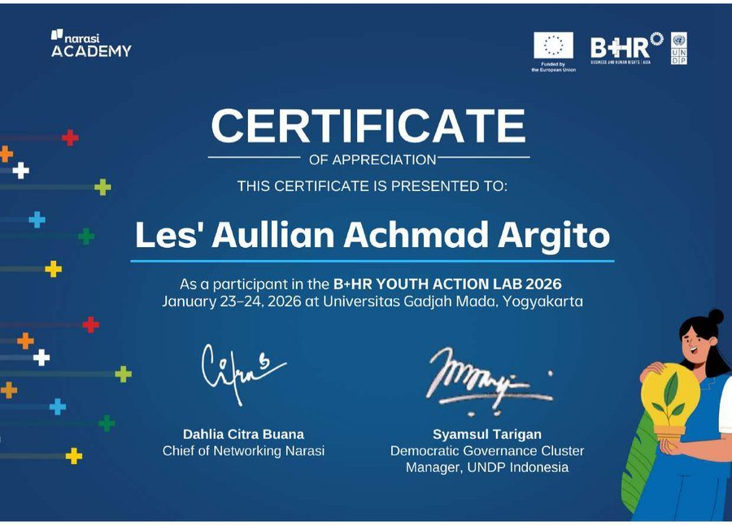
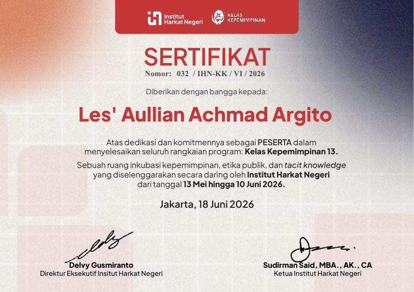